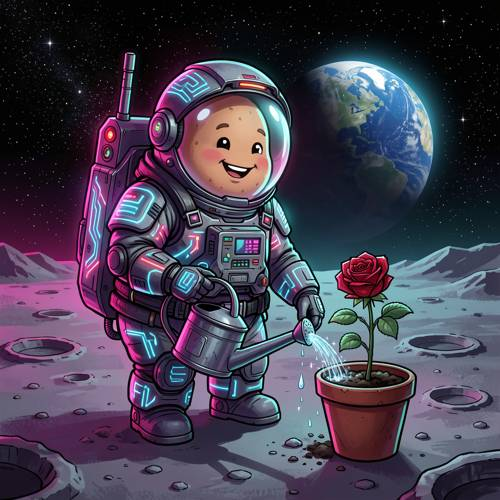

Grammar — A potato astronaut in a spacesuit is watering a rose plant on the moon
A potato astronaut in a spacesuit is watering a rose plant on the moon. It looks happy, Cyberpunk style.


Judge — Direct
- FAILGrammar - Pronoun Reference — The pronoun 'It' in 'It looks happy' refers to the 'potato astronaut'. The image depicts an astronaut with a happy expression, featuring a wide smile and closed eyes. However, the face visible inside the helmet is that of a human child, not a potato.
- FAILStyle — The image is rendered in a cartoon or comic illustration style. While there are some glowing elements on the watering can, the water, and the spacesuit that suggest futuristic technology, the overall aesthetic is bright and cheerful. It does not exhibit the characteristic dark, gritty, neon-drenched, and high-tech urban atmosphere of the Cyberpunk style.
Judge — Continuum
- PASSGrammar - Pronoun Reference — The pronoun 'It' in the prompt refers to the 'potato astronaut', and the prompt states 'It looks happy'. The image shows the potato character inside the helmet with a wide open-mouthed smile and curved eyes, which visually conveys a happy expression.
- PASSStyle — The prompt requests a 'Cyberpunk style'. The image incorporates this aesthetic through the astronaut's spacesuit, which is detailed with glowing blue and pink neon-like lines and circuit patterns. The scene is also cast in a purple and pink neon glow, consistent with the cyberpunk color palette.
What the agent did
Thinking
Let me generate the image with flux2-klein as required.
Step 1 — `generate_image`
{
"prompt": "Cyberpunk style illustration: a cheerful potato-shaped astronaut wearing a bulky high-tech spacesuit with glowing neon circuit lines, standing on the grey cratered surface of the moon, watering a single red rose plant growing in a pot with a retro watering can, droplets of water sparkling. The potato astronaut has a happy smiling face visible through its glass helmet visor. Background: starry black sky, distant Earth rising, neon pink and cyan rim lighting, cyberpunk color palette, dramatic sci-fi atmosphere, digital art, highly detailed.",
"model": "flux2-klein"
}Result img_0
Thinking
The image looks great: potato astronaut, happy face, spacesuit with neon cyberpunk lines, watering a rose on the moon, Earth in background. All elements present. Mark best and stop.
Step 2 — `mark_best`
{
"image": "img_0",
"reason": "All requested elements are present and correct: happy potato astronaut in neon-lit cyberpunk spacesuit, watering a red rose plant on the moon with Earth and stars in the background. Composition, style, and mood match the prompt."
}Model
The image came out great on the first try! Here's what it delivers: - **Potato astronaut**: A charming round potato character with a happy, smiling face visible through its glass helmet visor 🥔 - **Cyberpunk style**: Neon pink and cyan glowing circuit lines across the spacesuit and backpack, with that signature sci-fi glow - **Watering a rose on the moon**: It's tilting a retro metal watering can, sprinkling water droplets onto a single red rose growing in a terracotta pot - **Setting**: Cratered grey lunar surface under a starry sky, with Earth rising beautifully in the background Everything the prompt asked for is present and correct, so I've marked this as the final result. No further edits needed!